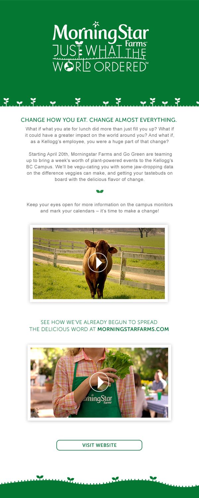
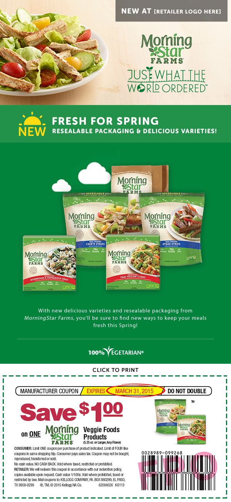
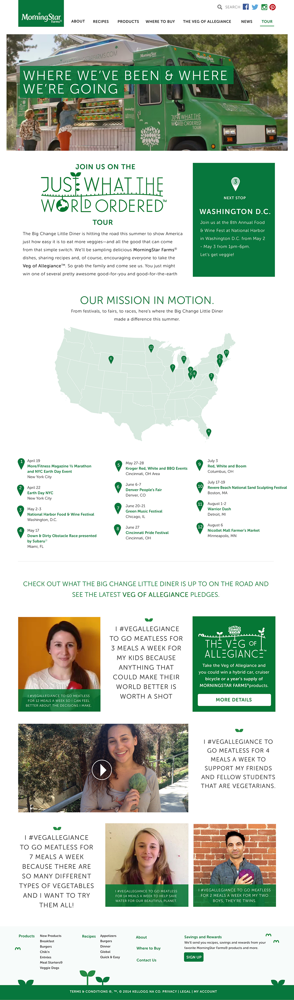
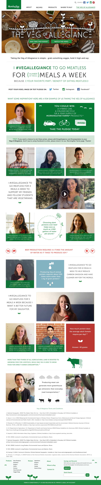

Veg of Allegiance
This campaign was multifaceted, but I was honored to be a part of it. The client had created a food truck that travelled across America promoting Morningstar Farms as well as encouraging people to take the “veg of allegiance” or a promise to the environment or themselves to try to limit their impact on the environment by eating vegetarian for a certain amount of time. The landing page was a way for people to track where the veg of allegiance truck would stop next.
Animated Page Counter
The landing page had a counter that was unable to be updated live. However, the client still wanted an animated counter, so I was responsible for creating a GIF counter that would give the illusion of being updated live.
Campaign Email Designs


Landing Page Designs

